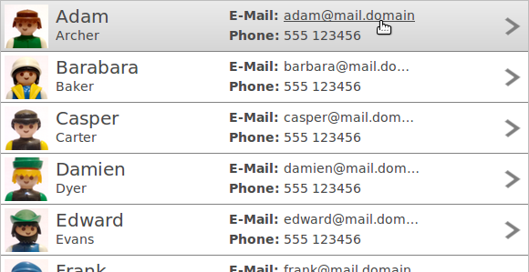

Tree and Table are the most powerful widgets in RAP. Not only can they easily display vast amounts of data (thanks to JFace and virtual rendering) in various ways, they also feature some additional functionality in RAP compared to their SWT counterparts.
The following is a list of hints you might find helpful when working with Tree or Table.
RAP includes it's own JFace implementation that can be used to sort, filter and edit data in Trees and Tables. Simply create Tree/Table viewers instead of the widget itself. RAP-specific features can still be enabled by accessing the widget within the viewer directly. Example:
viewer.getTable().setData( RWT.MARKUP_ENABLED, Boolean.TRUE );
When a table or tree displays many columns, the user often has to scroll horizontally to see specific data. Doing so means losing sight of the first columns, which may contain vital information that should be visible at all times. Using RWT.FIXED_COLUMNS, it is possible to exclude any number of leftmost columns from scrolling, so that they always stick on the left side of the tree or table.
Example:
tree.setData( RWT.FIXED_COLUMNS, new Integer( 1 ) );
Row templates allow developers to customize the way a Table or Tree present Items on screen, completely replacing the default column layout. A template consists of text and image cells that can be freely arranged. These cells can display either data from a Tree- or TableItem, or static content.

To create a new template, construct an instance of the Template class, and then add any number of ImageCell and TextCell instances. To apply it on a Table or a Tree, RWT.ROW_TEMPLATE is used:
Template template = new Template(); ImageCell imageCell = new ImageCell( template ); TextCell nameCell = new TextCell( template ); //... configure cells table.setData( RWT.ROW_TEMPLATE, template );
The call to setData should be placed directly after the controls creation. Once a template is applied to a control it will no longer be affected by changes to the template. The same template instance can also be applied to multiple controls.
To position a cell, you have to set exactly two horizontal and two vertical dimensions (two out of left, right and width, and two out of top, bottom and height). The cells are positioned relative to the area that is available to display the current item - which is usually the inner width of the Tree/Table widget and the height given using RWT.CUSTOM_ITEM_HEIGHT. The values for left, top, right and bottom may be absolute (in pixel), relative (in percentage), or the sum of both. The values for width and height may only be absolute.
imageCell.setLeft( 40, 0 ).setWidth( 48 ).setTop( 4 ).setBottom( 33.33f, 4 );
All cells can by further styled with colors, fonts, alignments, etc. Since all setter return the cell instance, chaining the commands as shown above is always possible. Note that as of RAP 2.2, the vertical alignment property is not supported for text cells, only for image cells.
Each cell can either display static content (using setText or setImage on the cell itself), or content form the current Tree/Table Item. For this the cell needs to be bound to a specific column using the bindingIndex. For example, this shows only the text from the first column:
Table table = new Table( parent, SWT.FULL_SELECTION ); new TableColumn( table, SWT.NONE ); // important Template template = new Template(); TextCell textCell = new TextCell( template ); textCell.setLeft( 0 ).setRight( 0 ).setTop( 0 ).setBottom( 0 ); textCell.setBindingIndex( 0 ); table.setData( RWT.ROW_TEMPLATE, template ); TableItem item = new TableItem( table, SWT.NONE ); item.setText( 0, "Data in the first column" );
Please note that while it is not useful to set the headerVisible property to true if row templates are used, it is still necessary to create column objects. They don't need a text or width though.
Cells can also be selectable. When a selectable cell is clicked on, it does not select the item, but triggers a selection event with the event.detail field set to RWT.CELL. Items can still be selected by clicking elsewhere, though the selection is only visible if the SWT.FULL_SELECTION style flag is set. If multiple cells in a template are selectable, cells can be given a name that is reflected in the event.text field in order to identify the selected cell.
You use the markup feature to format the text within a cell or embed links and additional images.
Unlike SWT, RAP supports line breaks ( \n
) in a columns text property.
There are two ways Tree and Table support virtual rendering. First, any tree/table will only render HTML for the data that is currently visible on screen. (Unlike List, which always renders it's entire content.) Second, if the widget (or viewer) is created with a VIRTUAL flag, items can be created lazily. As a result, data that is not visible will also not be transferred to the client, saving even more memory and initial rendering time.
The drawback of these features is a slight impact on performance when scrolling. If you
experience unsatisfying performance while scrolling, try reducing the number of columns,
or hide some columns (setting width to zero). When using the VIRTUAL flag,
you will also experience a small rendering delay when scrolling to previously unseen data.
You can reduce this effect by pre-caching data just above and below the visible area using
RWT.PRELOADED_ITEMS.
Any item and every cell of an item may have a custom background to highlight a specific unit of data. In SWT (and RAP, by default), hovering or selecting such an item will completely overlay these backgrounds, essentially removing onscreen information. This behavior can be configured in RAP using the CSS Theming API. Note that any item that has a background set on all cells (or the item itself), will only be identifiable as selected by the text color, or not at all (if there is also a custom foreground set).
In addition to the TableItem / TreeItem theming elements, there are also Table-RowOverlay / Tree-RowOverlay elements. In the default theme, these overlay elements are used to define the hover and selection behavior. If you wish for the item backgrounds to paint over the selection/hover effects, you will have to use these overlay element to create the effects. (You can also mix, so that hover or selection paints over the backgrounds, but not the other.)
Assuming you implement a complete custom theme, this is easy. Simply use only the item element to define the effect and define the overlay element as below:
Table-RowOverlay {
background-color: transparent;
color: inherit;
background-image: none;
}
If you wish to only make a theme contribution, you also need to overwrite every possible combination for the overlay element that may be defined in the main/default theme:
Table-RowOverlay,
Table-RowOverlay:hover,
Table-RowOverlay:selected,
Table-RowOverlay:selected:unfocused,
Table-RowOverlay:linesvisible:even:hover,
Table-RowOverlay:linesvisible:even:selected,
Table-RowOverlay:linesvisible:even:selected:unfocused {
background-color: transparent;
color: inherit;
background-image: none;
}
To create the new hover/selection effect you then have to define some or all of these combinations for the item element, for example:
TableItem:hover {
color: #4a4a4a;
background-color: #b5b5b5;
background-image: gradient(
linear, left top, left bottom,
from( #ebebeb ),
to( #d5d5d5 )
);
}
TableItem:selected,
TableItem:linesvisible:even:selected {
color: #ffffff;
background-color: #5882b5;
background-image: gradient(
linear, left top, left bottom,
from( #5882b5 ),
to( #416693 )
);
}
Alternatively, it's also possible to define semi-transparent background colors for the overlay element using the rgba notation. This would then create a hover/selection effect with the items background color(s) shining through.
Available in the RAP Incubator is a RAP implementation of the Nebula Grid widget. Based on the same JavaScript code as tree and table, it adds features like column grouping, checkboxes on multiple columns, variable item height and column footer. (It does not support all features of the original Nebula Grid.)